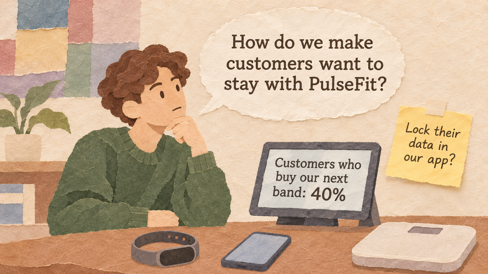
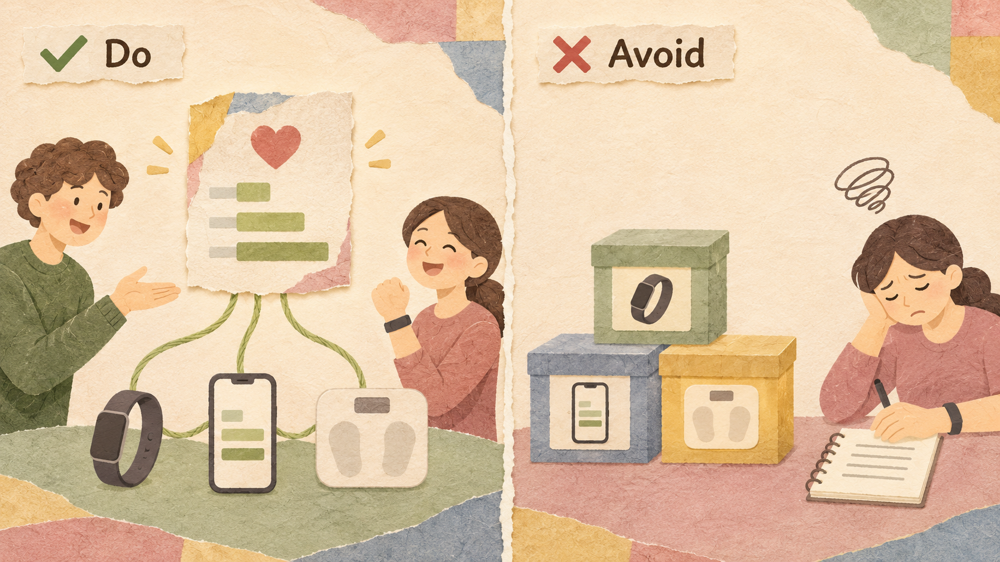
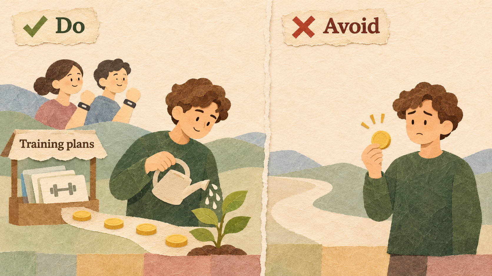
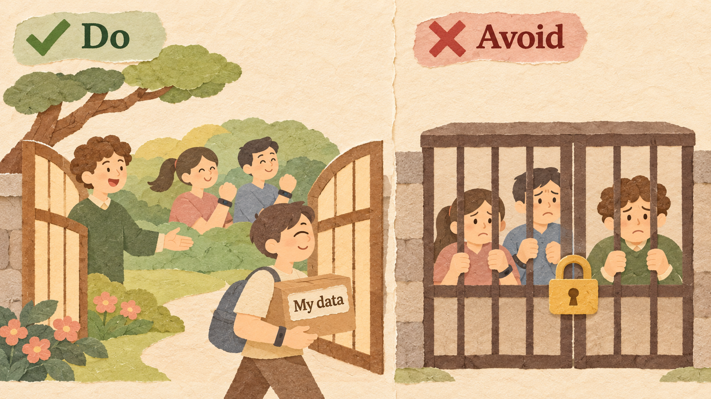
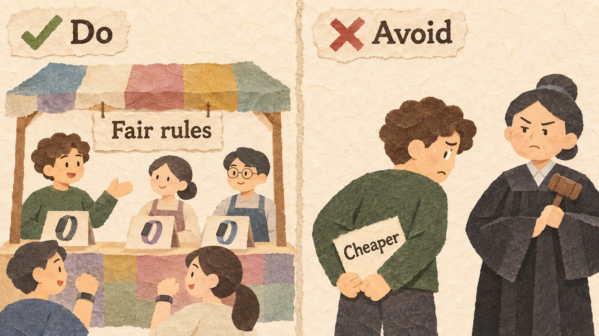

PulseFit is Noah's fitness-band company. A teammate suggests a quick fix: make it impossible to move step and sleep history out of the app, so customers "cannot leave."
| PULSEFIT | VALUE |
|---|---|
| Customers who own a PulseFit band | 10,000 |
| Price of a band / profit per band | $60 / $20 |
| Time until a band wears out | About 2 years |
| Customers who buy their next band from PulseFit | 40% |
| Customers who switch to a rival's band | 60% |
| Other PulseFit products or services | None |
A company keeps customers by making its products and services work better together than with anything else. They share one account, one set of data, and one design, so each extra product makes the others more useful, and leaving would cost the customer convenience, data, or benefits. The company then earns steady money from services on top of the products. Apple is the best-known example.
The customer should feel a clear benefit every time two of your products work together.

When a customer steps on a PulseFit scale, the band and the app combine weight, steps, and sleep into one weekly health report.
Selling many products that only share a logo. If they do not work better together, customers buy each from whoever is cheapest.
Products are sold once; services earn money every month and keep customers using the ecosystem.

PulseFit Plus costs $5 a month for training plans and sleep coaching that use the band's data.
Adding a service customers do not value, just to charge a monthly fee. Customers cancel and feel tricked.
Customers should stay because the ecosystem is better, not because leaving is made painful. Let them take their own data.

PulseFit lets customers download their full history at any time, and most still stay, because the combined report is useful.
Blocking data export or making other brands' accessories stop working. Customers feel trapped and new buyers stay away.
When many customers depend on your ecosystem, you have power over other companies. Using it unfairly brings fines and new laws.

PulseFit lets other workout apps read band data with the customer's permission, and charges them a small, clear fee.
Blocking partners from telling customers about cheaper offers, or charging very high fees because partners have no other way in.
An iPhone, a Mac, an iPad, an Apple Watch, and AirPods share one Apple account; photos, messages, and files appear on every device through iCloud. In early 2024, Apple said it had more than 2.2 billion active devices. In fiscal 2024, its services earned $96.2 billion, with a gross margin of about 74%, far higher than its hardware.
The Starbucks app combines ordering ahead, paying, and collecting stars for free drinks. At the end of 2023, Starbucks had 34.3 million active Rewards members in the United States, and payments through the program made up about 59% of sales in its U.S. company-operated stores.
In September 2016, a software update to some HP printers made other companies' ink cartridges stop working; printers said the cartridges were "damaged." After many complaints, HP offered an optional update to remove the block. In the United States, a court approved a $1.5 million settlement in 2019, and later settlements followed in Europe.
Apple's App Store rules stopped music streaming apps, such as Spotify, from telling iPhone users inside the app that they could pay less on the app's own website. In March 2024, the European Commission fined Apple more than €1.8 billion and ordered it to remove these rules.
| EXAMPLE | RESULT | THE RULE THAT DECIDED IT |
|---|---|---|
| Apple devices and services | Good | Better together, plus services (Rules 1 and 2) |
| Starbucks Rewards | Good | Customers stay for value (Rule 3) |
| HP printer ink | Bad | A trap instead of value (Rule 3) |
| Apple App Store in Europe | Bad | Unfair rules for partners (Rule 4) |
CLV = profit per customer per year x years the customer stays
Profit from repeat buyers = customers x repeat rate x profit per purchase
Profit = monthly profit x number of months - one-time cost
What you give up to get something you value more.
A promise, written before you start, about which result would make you change your decision.
Example: "If fewer than 5% of band owners subscribe to PulseFit Plus in six months, we will change the plan."
Six companies try to keep customers:
| MOVE | ANSWER | WHY |
|---|---|---|
| (a) Photos on the laptop | Value | Products work better together |
| (b) Blocks other ink | Trap | Other brands are blocked |
| (c) Stars for free drinks | Value | A real reward |
| (d) $200 to cancel | Trap | Leaving is made expensive |
| (e) Export playlists | Value | Customers who stay do so by choice |
| (f) Hidden delete button | Trap | Leaving is made hard on purpose |
10,000 band owners / $20 profit per band / no change: 40% buy their next band from PulseFit
Block customers from moving their history. Expect 60% to buy their next band from PulseFit.
Angry reviews cost 2,000 new buyers ($20 each). No extra cost.
$50,000 for PulseFit Plus ($5 a month, $4 profit) and a smart scale ($15 profit); data export stays open.
Expect 70% to buy the next band, 1,000 subscribers for 24 months, 1,000 scales.
Explain lock-in and switching costs, and tell value lock-in from trap lock-in.
Calculate customer lifetime value inside and outside an ecosystem.
Compare a trap plan with an ecosystem plan and write a decision rule.
Shapiro, C., & Varian, H. R. (1999). Information Rules (Chapter 5). Harvard Business School Press.
Apple Inc. (2024). Apple reports fourth quarter results. Fiscal 2024 services.
Starbucks Corporation (2024). Q1 fiscal 2024 earnings call.
The Register (2018, September 21). HP should pay out $1.5m for printer-bricking update.
European Commission (2024, March 4). Commission fines Apple over €1.8 billion over App Store rules for music streaming.